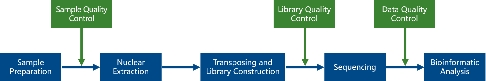
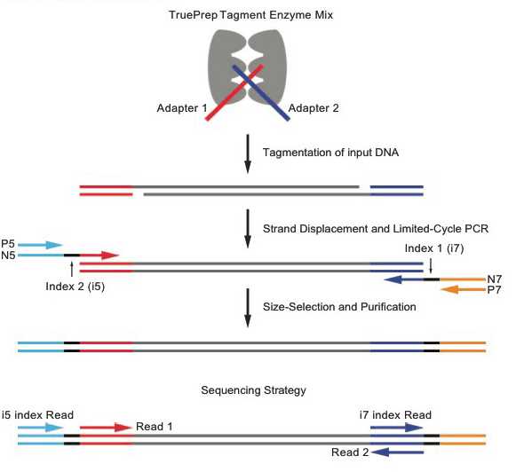
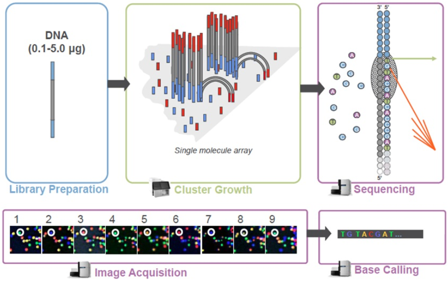
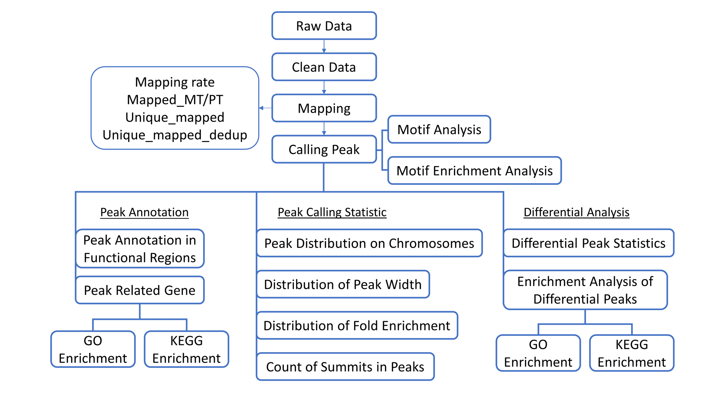
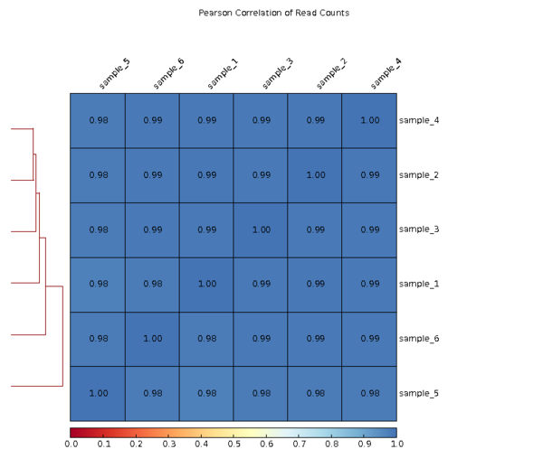
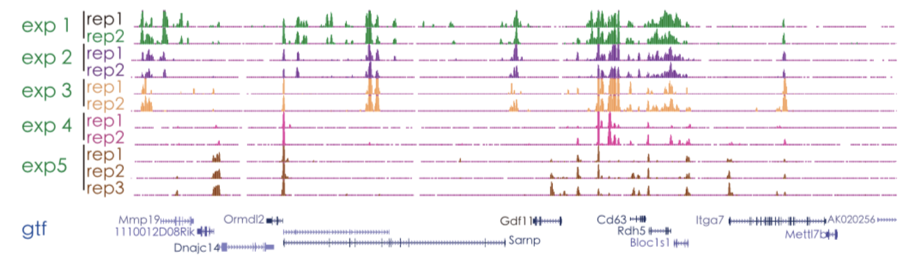

Assays for Transposase-Accessible Chromatin with high-throughput sequencing (ATAC-Seq) Analysis Report
| Contract Information | Contract Content |
|---|---|
| Contract ID | X202SC19100XXX-Z01-F001 |
| Batch ID | X202SC19100XXX-Z01-F001 |
| Species and Version | Homo_sapiens |
| Report Time | 2023-10-08 |
I. Background
Assay for transposase-accessible chromatin with high-throughput sequencing (ATAC-seq) is an information rich assay, allowing simultaneous interrogation of factor occupancy, nucleosome positions in regulatory sites, and chromatin accessibility genome-wide. Chromatin accessibility plays a critical role in the regulation of gene expression. Interactions among chromatin regulators, sequence-specific transcription factors, and cis -regulatory sequence elements are the main driving forces shaping context-specific chromatin structure and gene expression. Therefore, the attractive combination of speed, simplicity and low input requirements of ATAC-seq will enable new gene regulatory insights into biology and medicine.
II. Experimental Procedure
The ATAC-seq project includes two parts: 1. The ATAC experiment；2. The subsequent Next Generation Sequencing (NGS) and data analysis. From the sample extraction to sequencing, each step may have an impact on the quality and quantity of data output, which will directly affect the bioinformatic analysis results. Obtaining high-quality data is the premise to ensure that bioinformatics analysis is correct, comprehensive and credible. Therefore, Novogene strictly checks every experimental step and fundamentally ensures the output of high-quality data. The workflow is shown as follows.

1 Library Preparation for Sequencing
Nuclei are extracted from samples and tested for quality control (QC). After the QC, the nuclei pellets are resuspended in the Tn5 transposase reaction mix, which includes transposase and equimolar Adapter1 and Adapter 2. The mix of transposition reaction is incubated at 37°C for 30 min. PCR is then performed to amplify the library. Libraries were purified with the AMPure beads and library quality was assessed. The workflow of library construction is shown as follows.

2 Quality control of Library
After the construction of the library, the initial quantification was done with Tapestation 4150, and the library is diluted to 2-4ng/μl. Then the insertion size of the library is detected with NGS3K. If meeting the expectation, the accurate concentration of the library is quantified by Q-PCR (library effective concentration > 2nM) to ensure the accurate molar amount that will pooled for sequencing.
3 Sequencing
After library quality control, sequencing is performed for different libraries according to the concentration and the demand of data amount on Illumina HiSeq/NovaSeq platform. The basic principle of sequencing is sequencing by synthesis. Four kinds of fluorescent labeled dNTP, DNA polymerase and adapter primers are added to the flow cell for amplification. When each sequence cluster extends the complementary chain, each fluorescent labeled dNTP releases the corresponding fluorescence. The sequencer captures the fluorescent signal and converts the light signal into the sequencing peak through computer software to obtain the sequence information of the fragment to be detected. The sequencing process is shown in the following figure.

III. Bioinformatic analysis results
The bioinformatic analysis workflow of raw sequencing data is shown as follows:

1 Data Quality Control
1.1 FastQC of Raw reads
The massive raw data obtained by high-throughput sequencing technology must be qualified to guarantee the downstream bioinformatic data analysis. The popular software for the quality control FastQC is used to access the basic quality of the raw reads. Summary of the QC is shown in the following(Figure 1-1):
Figure 1-1 raw reads of FastQC
Top-left: horizontal axis represents position in read (bp), vertical axis represents quality scores. Different colors represent different quality range;
Top-middle: horizontal axis represents position in read (bp), vertical axis represents base percentage;
Top-right: the distribution of read length;
Bottom-left: GC distribution over all sequences. Red line is the actual GC content distribution, blue line is the theoretical distribution;
Bottom-middle: N-ratio across all bases;
Bottom-right: x-axis is the sequence duplication level. y-axis is the percent of the deduplicated reads.
1.2 Raw Data Trimming
To make sure the quality of data analysis, raw data need to be filtered to get clean data that all the analysis are based on. We use Skewer to trim adaptor sequences and filter low quality sequences.The procedures for data trimming are listed below:
(1) Discard the reads with mean quality lower than 20;
(2) Discard the reads with N ratio (unsure base) larger than 15%;
(3) Trim the adapter sequence at the 3’-end;
(4) Discard the reads whose length are less than 18nt after trimming.
Table 1-1 Summary of raw data quality control
| Sample | Raw_reads | Low_quality | Degeneratives | Empty | Too_short | Trimmed | Untrimmed | Clean_reads | Clean_rate |
|---|---|---|---|---|---|---|---|---|---|
| sample_1 | 28647182 | 515 | 0 | 0 | 5 | 3510719 | 25135943 | 28646662 | 100.00% |
| sample_2 | 29320281 | 624 | 0 | 0 | 5 | 3548219 | 25771433 | 29319652 | 100.00% |
| sample_3 | 26186099 | 413 | 0 | 0 | 2 | 3067579 | 23118105 | 26185684 | 100.00% |
| sample_4 | 27317914 | 353 | 0 | 0 | 5 | 3092175 | 24225381 | 27317556 | 100.00% |
| sample_5 | 32653029 | 580 | 0 | 0 | 7 | 3827438 | 28825004 | 32652442 | 100.00% |
| sample_6 | 29853641 | 507 | 16 | 0 | 3 | 3857634 | 25995481 | 29853115 | 100.00% |
(1) Sample: Sample name
(2) Raw_reads: the original sequencing reads counts;
(3) Low_quality: reads with mean quality lower than 20 before trimming;
(4) Degeneratives: reads with at least 15% N before trimming;
(5) Empty: reads with all bases from adapter (s);
(6) Too_short: reads shorter than 18nt that are discarded after trimming;
(7) Trimmed: reads with at least 18nt that are kept after trimming;
(8) Untrimmed: reads that are kept untrimmed;
(9) Clean_reads: kept reads after trimming, including both trimmed and untrimmed;
(10) Clean_rate: the ratio of Clean_reads to Raw_reads.
1.3 FastQC of Clean Reads
Quality control of the clean reads after trimming is shown below(Figure 1-2):
Figure 1-2 FastQC of Clean_reads
Top-left: horizontal axis represents position in read (bp), vertical axis represents quality scores, different colors represent different quality range;
Top-middle: horizontal axis represents position in read (bp), vertical axis represents base percentage;
Top-right: the distribution of read length;
Bottom-left: mean GC content (%). Red line is the actual GC content distribution, blue line is the theoretical distribution;
Bottom-middle: N-ratio across all bases;
Bottom-right: x-axis is the sequence duplication level. y-axis is the percent of the deduplicated reads.
2 Mapping
2.1 Summary of Mapping
BWA is used to do the genome mapping analysis for the clean reads (Li, H. and R. Durbin, 2009). In the analysis of ATAC-Seq, the percentage of the unique sequence in the total sequence is the most important information. In addition, reads mapped on mitochondria in mammals or mapped on chloroplasts in plant should be removed before subsequent analysis. The mapping result is summarized in the table below (Table 2-1):
Table 2-1 Summary of mapping
| Sample | Clean_reads | Mapped_MT/PT | Mapped_non_MT/PT | Unique_mapped | Unique_mapped_dedup |
|---|---|---|---|---|---|
| sample_1 | 28646662 | 411980(1.44%) | 27576235(96.26%) | 25973246(90.67%) | 22992038(80.26%) |
| sample_2 | 29319652 | 420230(1.43%) | 28320714(96.59%) | 26711129(91.10%) | 23687476(80.79%) |
| sample_3 | 26185684 | 435029(1.66%) | 25128619(95.96%) | 23668739(90.39%) | 21212942(81.01%) |
| sample_4 | 27317556 | 418038(1.53%) | 26346527(96.45%) | 24845657(90.95%) | 22210593(81.31%) |
| sample_5 | 32652442 | 636615(1.95%) | 31365449(96.06%) | 29661491(90.84%) | 26148564(80.08%) |
| sample_6 | 29853115 | 514181(1.72%) | 28779687(96.40%) | 27182013(91.05%) | 24288697(81.36%) |
(1) Sample: Sample name;
(2) Clean_reads: the clean reads counts;
(3) Mapped_MT/PT: Counts of reads mapping to to mitochondria or chloroplasts ( The ratio in parentheses is the ratio of reads which map to mitochondria or chloroplasts to Clean reads );
(4) Mapped_non_MT/PT: Counts of reads whcih don’t map to mitochondria or chloroplasts ( The ratio in parentheses is the ratio of reads which don’t map to mitochondria or chloroplasts to Clean reads );
(5) Unique_mapped: Number of reads that can be uniquely mapped to the reference genome (The ratio in parentheses is the ratio of Unique_mapped reads to Clean reads.);
(6) Unique_mapped_dedup: Read count after remove the Unique_mapped reads mapped to the exact same position of the genome( The ratio in parentheses is the ratio of Dedup_Unique_mapped reads to Clean reads ).
2.2 Mapping Quality Statistics
MAPQ (Mapping Quality) represents the reliability of reads map to the reference genome. Proper quality value is chosen as the threshold for mapping. Here we choose 13 as the threshold, which means that the mapping chance of the accordingly non-unique region is only 0.05. Only one read pair is kept for the duplicates in the following peak calling.
Figure 2-1 Distribution of MAPQ
Horizontal axis is MAPQ, vertical axis is the reads count.
2.3 Genome-wide Distribution of the Mapped Reads
Summary of the density of total mapped reads in different chromosomes (plus and minus) is shown in the figure below. With 5k slide window size, the medium of the number of reads mapped to each base within window is calculated, and converted to log2. The longer the whole chromosome is, the more reads are mapped (Marquez et al. 2012). From the correlation of the number of the mapped reads and the length of the chromosome in the figure, we can see the correlation between the total number of the reads and the length of the chromosome much easier.
Figure 2-2 Genome wide distribution of the mapped reads
Horizontal axis represents the postition of the chromosome, vertical axis represents the number of the reads mapped to 1000nt window size. Here is the unique mapping and deduplication results.
2.4 Distribution of the Reads Mapped to TSS
The computeMatrix module of the software deepTools is used to analyze the ATAC-Seq signal in the 3 kb upstream and downstream regions of the transcription start site (TSS). Each TSS and its 3kb upstream and 3kb downstream regions are divided into bins according to the window size of 50bp. Then the average signal strength is calculated in each bin. Reads density refers to the percentage of the reads in each part to total reads. The average signal distribution is shown below(Figure 2-3).


Figure 2-3 Distribution of the reads mapped to TSS
Horizontal axis: relative position of the gene. Vertical axis reads density.
2.5 Distribution of the Reads Mapped to the Gene Body
The computeMatrix module of the software deepTools is used to analyze the ATAC-Seq signal in the 3 kb upstream and downstream regions of the gene body as well. Each gene and its 3kb upstream and 3kb downstream regions are divided into bins according to the window size of 50bp. Then the average signal strength is calculated in each bin. Reads density refers to the percentage of the reads in each part to total reads. The average signal distribution is shown below (Figure 2-4)


Figure 2-4 Distribution of the reads mapped to gene body
Horizontal axis: relative position of the gene. Vertical axis: reads density.
2.6 Sample Correlation Detection
Biological replicate is necessary for every experiment, same for high-throughput technology (Hansen et al.). Biological replicate mainly has two applications: One is to prove that the biological experiment can be replicated and there is no large variance. The other one is to make sure that following differential gene analysis can get reliable results. The correlation among samples is an important index to see whether the experiment design is reliable and whether the sampling is right. The closer correlation coefficient is to 1, the better the consistency between samples.

Figure 2-6 Pearson test among samples
Heat-map of sample correlation test, correlation coefficient among samples (Pearson correlation coefficient). The darkness of the color represents how large is the correlation coefficient.
2.7 Visualization of Pileup Signal
We provide the visualization results of genome wide reads mapping in bam format. IGV (Integrative Genomics Viewer) browser is recommended to view the bam file.
IGV browser has the following characters:
(1) can reveal single or multiple mapping positions in the genome in different scales, including the distribution of the reads in different chromosomes, and the distribution of annotated exons, introns, splicing junctions and inter-gene region;
(2) can reveal reads abundance in different regions under different scales which reflect the expression level;
(3) can reveal the annotation information of the gene and alternative splicing isoforms;
(4) can reveal other annotation information;
(5) can download annotation information from remote and local server.
Please refer to the IGV manual for detailed instruction (IGVQuickStart.pdf).

Figure 2-6 Visualization of pileup signal by IGV(demo)
3 Fragment Size Prediction
3.1 Summary of Fragment Size
The pair-end ATAC-Seq sequencing reads can reflect information on nucleosome packaging and positioning. The length of the inserted sequencing reads will show a periodic distribution of around 200 bp, which indicates such position is protected by the nucleosome and cannot be bound by the transposase. These fragments contain one or more small nucleosomes.
Table 3-1 Summary of Fragment size
| Sample | fragment_sizes |
|---|---|
| sample_1 | 242 |
| sample_2 | 253 |
| sample_3 | 234 |
| sample_4 | 248 |
| sample_5 | 258 |
| sample_6 | 244 |
(1) Sample: sample name
(2) frag_sizes: frag_sizes length
3.2 Distribution of Fragment Size
Length distribution is analyzed and shown below:
Figure 3-1 frag_size distribution Figure
Horizontal axis is the length of the predicted length of frag_sizes, vertical axis is the density value.
4 Peak Calling
4.1 Summary of Peak Calling
MACS2 software (Yong Zhang, Tao Liu et al., 2008) (threshold q value = 0.05) is used to call peak. The number of peaks, the peak width and its distribution are analyzed and the peak related genes are found.
Table 4-1 Summary of peak calling
| Experiment | Sample | Count_of_narrow_peak | FRiP | Count_of_summits |
|---|---|---|---|---|
| sample_1 | sample_1 | 2003 | 1.1452% | 2163 |
| sample_2 | sample_2 | 1994 | 1.1232% | 2157 |
| sample_3 | sample_3 | 3316 | 1.2656% | 3462 |
| sample_4 | sample_4 | 2262 | 1.1312% | 2415 |
| sample_5 | sample_5 | 9249 | 1.7016% | 9639 |
| sample_6 | sample_6 | 3268 | 1.1417% | 3442 |
(1) Experiment: experimental group name;
(2) Sample: sample name;
(3) Count_of peak: the number of peak (narrow);
(4) FRiP: the ratio of the numer of the reads in the peak to the total reads, which can test the effect of IP experiment;
(5) Count_of_summits: number of summits. Some peaks can have multiple summits due to close position
4.2 Genome Wide Distribution of Peaks
The summary of genome wide distribution of peaks is shown in the figure below. The number of the peaks mapping to the chromosome and its distribution can reflect the distribution of chromotin open regions.
Figure 4-1 Genome wide distribution of peaks
Horizontal axis is the coordinate of the peak in the chromosome. Vertical is the chromosome. Every blue line represents a peak.
4.3 Distribution of Peak Width
The peak width represents the length of the DNA that is fragmented by the transposase. The number of peaks of different peak width is calculated, as shown below.

Figure 4-2 Distribution of peak width
Horizontal axis is the width of the peak (nt), vertical axis is the number of the corresponding peaks
4.4 Distribution of Fold Enrichment
The fold enrichment value is the digital display of the peak signal during peak calling, which can be called signal value. The larger the value, the more reads are enriched to this peak. The peak number of different fold changes is calculated. The distribution of fold enrichment is shown below:

Figure 4-3 Distribution of fold enrichment
Horizontal axis represents the enrichment fold change of the peak. Vertical axis represents the number of the peaks.
4.5 Distribution of Q-values
The significance of the peak is the indication of the credibility of the peak, so the q value for each peak is calculated. The peak number of different q values is calculated and the distribution is shown below:
Figure 4-4 Distribution of Q-values
Horizontal axis represents -log10 q value of the peak; Vertical axis represents the number of the peaks.
Figure 4-5 Count of summits in peaks
Horizontal axis represents the number of summit in each peak. Vertical axis is the corresponding number of the peak.
4.7 Summits Distribution
Each peak is divided into 100bp windows and the summits in each window of all the peaks are counted as shown below:
Figure 4-6 Percentile position of summits in peaks
Horizontal axis is the position of summits, vertical axis is the count of the summits.
4.8 Single Distribution in Summits
The computeMatrix module of the software deepTools is used to analyze the ATAC-Seq signal in the 3 kb upstream and downstream regions of the peak summits. Each summit and its 3kb upstream and 3kb downstream regions are divided into bins according to the window size of 50bp. Then the average signal strength is calculated in each bin. Reads density refers to the percentage of the reads in each part to total reads. The average signal distribution is shown below (Figure 4-7).

Figure 4-7 Distribution of the 3 kb region upstream and downstream of the peak summit
Line chart: Horizontal axis: relative position of the peak summit. Vertical axis: reads density.
Heat map: Horizontal axis: relative position of thepeak summit. Vertical axis: clustering results of the read signal for each region
5. Motif Analysis
Motif indicates the sequence conservation of the position of the peak, which may play a role in the regulation of gene expression. Using the sequence information of 250bp (total 500bp) upstream and downstream of the peak, Homer software is used to identify the conserved sequence features of the peak enrichment position.
5.1 Motif Searching

Figure 5-1 conservative sequence
The most significant 25 motifs of length 8, 10, 12, 14 were identified for each set of experiments.
For details on each motif, please refer to the result file and the readme file.
5.2 Enrichment of Motif and Known Transcription Factor Motif
The enrichment between the motifs of all samples and the known transcription factor motif in the database is analyzed and shown below.
Figure 5-2 Enrichment of motif and known transcription factor motif
Horizontal axis represents each sample and vertical axis represents the transcription factor in the database.
The size of the circle indicates the degree of enrichment of the motif's motif and the corresponding transcription factor's motif. The larger the circle, the higher the degree of enrichment.
6 Peak Annotation
6.1 Peak-TSS Distance
Peak-TSS distance distribution can be used to predict the degree of accessibility around the TSS. TSS (transcription start site) of every peak related gene is detected by PeakAnnotator (Salmon-Divon and Dvinge et al., 2010). Peak-TSS distance distribution is analyzed according to the distance between the peak and TSS.

Figure 6-1 Distribution of Peak-TSS Distance
Horizontal axis represents the distance from peak to TSS. Vertical axis represents the number of the peak.
6.2 Distribution of Peaks in Functional Regions
The distribution of peak over various functional areas is analyzed by ChIPseeker software. The correspondence between peaks and functional areas is in the order of priority of promoter, 5'UTR, 3'UTR, Exon, Intron, Downstream, and Intergenic. For example, if the position of a peak may be an exon of a gene and an intron of another gene, according to the above priority, the peak is annotated to the exon. The figure below shows the distribution of peaks in different functional regions.
Figure 6-2 Peak distribution in functional gene region
Distribution of peak in different functional area.
6.3 GO Enrichment Analysis
Gene Ontology (GO, http://www.geneontology.org/) is international standard classification system for gene function attributes. As the database built by Gene Ontology Consortium, it aims to build up an up-to-date, comprehensive, computational model of biological system, to describe gene and protein function at different levels, for all species. GO covers three domains: Molecular Function, Biological Process and Cellular Component. Gene or protein can find the corresponding GO accession number by ID access or sequence annotation. Every GO number can find its corresponding Term, which is the function classification or cellular localization. Any gene whose position is overlapped with peak is peak related gene. Results of GO enrichment analysis of the peak related gene are shown below.
Table 6-1 peak related gene GO enrichment
| GO | Description | Term_type | Overrepresented_pvalue | Corrected_pvalue | Gene_item | Gene_list | Bg_item | Bg_list |
|---|---|---|---|---|---|---|---|---|
| GO:0031838 | haptoglobin-hemoglobin complex | cellular_component | 2.5747e-05 | 0.25979 | 3 | 351 | 4 | 18756 |
| GO:0001649 | osteoblast differentiation | biological_process | 0.00010713 | 0.7206 | 13 | 351 | 200 | 18756 |
| GO:0015701 | bicarbonate transport | biological_process | 0.00034638 | 1 | 5 | 351 | 33 | 18756 |
| GO:0008355 | olfactory learning | biological_process | 0.00035026 | 1 | 2 | 351 | 2 | 18756 |
| GO:0031720 | haptoglobin binding | molecular_function | 1.0102e-05 | 0.20386 | 3 | 406 | 3 | 18756 |
| GO:0031838 | haptoglobin-hemoglobin complex | cellular_component | 3.9757e-05 | 0.40115 | 3 | 406 | 4 | 18756 |
(1) GO_accession: the unique GO ID;
(2) Description: Function description;
(3) Term_type: Including cellular_component, biological_process and molecular_function;
(4) Over_represented_pValue: significance of enrichment analysis;
(5) Corrected_pValue: P-Value after correction, normally, with padj< 0.05 are enriched >;
(6) Gene_with_peak_item: the number of peak related genes with this GO term;
(7) Gene_with_peak_list: the number of peak related gene;
(8) Bg_item: the number of background gene with this GO term;
(9) Bg_list: the number of background genes;
Choose the first five results for each experiment.
Below is the GO enrichment bar of peak overlapping genes. It directly reflects the distribution of the number of the peak overlapping genes that are enriched in the biological process, cellular component and molecular function.
Figure 6-3 GO enrichment
Bar: horizontal axis is the number of the peak overlapping gene. Different colors are used to differentiate biological process, cellular component and molecular function.
DAG figure: every note represents a GO project. Rectangular represents top 10 enrichment GO.
GO term: Darkness represents the enrichment level. The darker of the color, the higher of the enrichment. The name of the project and the significance (padj) are shown in every note.
6.4 KEGG Enrichment Analysis
Different genes coordinate with each other to realize the function in organism. Kyoto Encyclopedia of Genes and Genomes (KEGG, http://www.kegg.jp/) is a collection of manually curated databases, containing resources onf genomic, biological-pathway and disease information (Kanehisa,2008). Pathway enrichment analysis identifies significantly enriched metabolic pathways or signal transduction pathways associated with peak overlapping genes, comparing the whole genome background.
Table 6-2 KEGG enrichment list
| Term | Database | ID | Input number | Background number | pvalue | Corrected pvalue |
|---|---|---|---|---|---|---|
| Ribosome biogenesis in eukaryotes | KEGG PATHWAY | hsa03008 | 13 | 89 | 9.77176941281e-05 | 0.0112375348247 |
| Basal transcription factors | KEGG PATHWAY | hsa03022 | 8 | 45 | 0.000679282250465 | 0.0421803455704 |
| Parkinson's disease | KEGG PATHWAY | hsa05012 | 15 | 142 | 0.000733571227312 | 0.0421803455704 |
| Oxidative phosphorylation | KEGG PATHWAY | hsa00190 | 14 | 133 | 0.00112114833822 | 0.0491726080969 |
| Ribosome | KEGG PATHWAY | hsa03010 | 43 | 138 | 1.73624322285e-21 | 4.09753400594e-19 |
| Basal transcription factors | KEGG PATHWAY | hsa03022 | 10 | 45 | 5.8989242446e-05 | 0.00696073060863 |
(1) Term: Description information of KEGG pathway;
(2) Database: KEGG PATHWAY;
(3) ID: The unique pathway identifier in the KEGG database;
(4) Input number: the number of peak overlapping gene in the corresponding pathway;
(5) Background number: The number of the genes in the corresponding pathway;
(6) P-value: statistical significant level of enrichment analysis;
(7) Corrected p-value: statistical significant level after correction. Normally, if the corrected P-value < 0.05 this pathway is enriched.
Peak overlapping gene KEGG enrichment scatter plot (Figure 6-4) is the visualization of KEGG enrichment analysis. In this figure, the extent of KEGG enrichment is measured by Rich factor, q-value and the number of the genes that are enriched in this pathway. The top 20 significantly enriched terms in the KEGG enrichment analysis are displayed below. If the enriched pathway is less than 20, all the terms will be displayed.
Figure 6-4 KEGG enrichment scatter
Vertical axis represents pathway name, horizontal axis represents Rich factor, the size of the dot represents the numbers of the overlapping peak genes in the pathway, and the color of the dots corresponds to different q-value range. The size of the dots represents the number of the genes whose peaks are overlapping in this pathway.
7 Differential Analysis
Only when the number of groups is not less than two can the differential analysis be performed between groups.
Differential analysis is performed using FoldEnrich values of different group peaks. Differential binding sites are analyzed in different groups by finding differential peaks when the ratio of FoldEnrich is larger than 2. Genes related to the differential sites are found by differential binding sites, then annotation and enrichment analysis are performed.
7.1 Summary of Differential Peaks
The Differential Expression Venn diagram illustrates the differential peaks of the compared groups. The sum of all the numbers in the circle represents the total number in the compared groups, and the overlapping part is the common peak number between two compared groups., as shown in the figure below.
Figure 7-1-1 Venn diagram of differential peaks in compared groups
Different colors represent different compared groups (A or B). The sum of the number in the pie is the peak number in this compared group, and the overlapping part is the number of common genes among comparison groups.
<
Figure 7-1-2 Venn diagram of differential peak in the same gruops
Since some compared groups (eg. A or B) may include multiple experimental groups (eg. A1, A2, A3), here only show the number of peaks among experimental groups within one compared group (eg. A1&A2, A1&A3). Different colors represent different experimental groups (A1 or A2). The sum of the number in the pie is the peak number of this experimental group. Single color is group specific peak number. Overlapping part is the common peak number between two experimental groups.
7.2 Enrichment Level Analysis Among Different Samples
RPM (Reads per million mapped reads) value of the peak in different samples (the ratio of 1M reads that enriched to the peak in a single sample) is used to do clustering analysis to determine the enrichment pattern of the same peak in different samples or the enrichment difference of different peaks in the same sample. Hierarchical clustering is performed based on RPM value in different samples. Different colors represent different clustering group information.
Figure 7-2 Peak enrichment analysis among samples
Top is the clustering among different samples in comparable groups.
Bottom is the correlation among different samples in comparable groups.
7.3 Reads Density Distribution Among Samples
RPM is the number of reads enriched in peak area per million reads. Boxplot is used to show reads enrichment in the annotated peak area in different samples.
Figure 7-3 Boxplot of RPM value among samples
7.4 Peak Enrichment Level Analysis of Different Groups
RPM value of the peak in different groups (the ratio of 1M reads that enriched to the peak in a single group) is used to do clustering analysis to determine the enrichment pattern of the same peak in different group or the enrichment difference of different peaks in the same group. Hierarchical clustering is performed based on RPM value in different samples. Different colors represent different clustering group information.
Figure 7-4 Peak enrichment analysis among different experimental groups
Top is the clustering analysis of peaks from different experimental groups.
Bottom is the correlation among different experimental groups.
7.5 Peak RPM Scatter Plot between Groups
The RPM of each comparison combination in the peak region was calculated (if there was a biological replicate, the RPM of the biological replicate samples was averaged) and presented as a scatter plot.
Figure 7-5 Peak RPM Scatter Plot between Groups
7.6 GO Enrichment Analysis of Differential Peak Related Genes
GO enrichment analysis for the differential peak related genes is shown below:


Figure 7-6 GO enrichment analysis for the differential peak genes
7.7 KEGG Enrichment Analysis of Differential Peak Related Genes
KEGG enrichment analysis for the differential peak related genes is shown below:
Figure 7-7 KEGG enrichment analysis for differential peak genes
IV Appendix
1 Software List
| Analysis | Software | Version | Parameters | Remarks |
|---|---|---|---|---|
| Trimming | skewer | 0.2.2 | -m pe | Filter rawdata |
| QC | fastqc | v0.11.5 | ||
| mapping | BWA | 0.7.12-r1039 | -T 25 -k 18 | Mapped to the reference genome |
| correlation between samples | deepTools | 3.0.2 | --corMethod pearson | |
| peak calling | MACS2 | 2.1.2 | -q 0.05 --call-summits --nomodel --shift -100 --extsize 200 --keep-dup all | |
| Identification of motif | homer findMotifsGenome.pl | v4.9.1 | -gc -len 8,10,12,14 | |
| GO enrichment | Goseq, topGO, Bioconductor(2.13) | 4.10.2 | corrected pvalue<0.05 | |
| KEGG enrichment | KOBAS | 3.0 | corrected pvalue<0.05 |
2 Methods
Methods：PDF
3 Raw Data Explanation
The original raw data from Illumina platform are transformed to Sequenced Reads, known as Raw Data or RAW Reads, by base calling of CASAVA. Raw data are recorded in a FASTQ file, which contains sequencing reads and corresponding sequencing quality. Every read in FASTQ format is stored in four lines, as indicated below:
@HWI-ST1276:71:C1162ACXX:1:1101:1208:2458 1:N:0:CGATGT
NAAGAACACGTTCGGTCACCTCAGCACACTTGTGAATGTCATGGGATCCAT
+
#55???BBBBB?BA@DEEFFCFFHHFFCFFHHHHHHHFAE0ECFFD/AEHH
Line 1 begins with a '@' character and is followed by the Illumina Sequence Identifiers and an optional description.
| Identifier | Meaning |
|---|---|
| HWI-ST1276 | Instrument – unique identifier of the sequencer |
| 71 | Run number – Run number on instrument |
| C1162ACXX | Flowcell ID - ID of flow cell |
| 1 | Lane Number - positive integer |
| 1101 | Tile Number - positive integer |
| 1208 | X - x coordinate of the spot. Integer which can be negative |
| 2458 | Y - y coordinate of the spot. Integer which can be negative |
| 1 | Read Number - 1 for single reads, 1 or 2 for paired ends |
| N | whether it is filtered - NB: Y if the read is filtered out, not in the delivered fastq files, otherwise N |
| 0 | Control number - 0 when none of the control bits are on. Otherwise it is an even number |
| CGATGT | Illumina index sequences |
Line 2 is the raw sequence reads.
Line 3 begins with a '+' character and is optionally followed by the same sequence identifiers and descriptions as in Line 1.
Line 4 encodes the quality values for the sequence in Line 2 and must contain the same number of characters as the bases in the sequence (Cock, 2009.).
The details of Illumina Sequence Identifiers are as follows:
(1) HWI-ST1276:71 HWI-ST1276, Instrument - unique identifier of the sequencer; 71, run number - Run number on instrument.
(2) C1162ACXX:1:1101:1208:2458 refers to the coordinate of read on C1162ACXX (Flowcell ID) flowcell, line 1, 1101 tile is(x=1208, y=2458).
(3) 1:N:0:CGATGT the first number is 1 or 2, 1 refers to a single reads or the first read of paired ends, 2 refers to the second of paired ends; the second letter refers to whether reads is adjusted(Y means yes, N means no); the third number represent the number of Control Bits in sequence; six bases on the fourth place is Illumina index sequence.
Sequencing process itself has the possibility of machine errors. Sequencing error rate distribution can reflect the quality of sequencing data. The quality value of each base in sequence information is stored in the FASTQ file. Quality value of the reads represented by Qphred and the “e” represents the sequence error rate, Qphred=-10log10(e). The relationship between sequencing error rate (e) and sequencing base quality value (Qphred) is as following(Base Quality and Phred score relationship with the Illumina CASAVA v1.8 software).
| Phred Score | Error Rate | Correct Rate | Q-score |
|---|---|---|---|
| 10 | 1/10 | 90% | Q10 |
| 20 | 1/100 | 99% | Q20 |
| 30 | 1/1000 | 99.9% | Q30 |
| 40 | 1/10000 | 99.99% | Q40 |
(1) Due to the gradual consumption of reagents during sequencing, the sequencing error rate increases with the length of reads, which is a common feature of the Illumina high-throughput sequencing platform (Erlich Y, Mitra PP et al. 2008; Jiang L, Schlesinger F Et al.2011.).
(2) The first six bases have a relatively high error rate due to the incomplete binding of random hexamers used in priming cDNA synthesis (Jiang et al.). In general, a single base error rate should be lower than 1%. Result Directory: Result/1.QC/ErrorRate
4 Reference
1. Andrews S. (2010). FastQC: a quality control tool for high throughput sequence data. Available online at: http://www.bioinformatics.babraham.ac.uk/projects/fastqc
2. Ashburner, M. and C. A. Ball, et al. (2000). "Gene ontology: tool for the unification of biology. The Gene Ontology Consortium." Nat Genet 25 (1): 25-9.
3. Sven H, and Christopher B,et al. (2010). "Simple Combinations of Lineage-Determining Transcription Factors Prime cis-Regulatory Elements Required for Macrophage and B Cell Identities." Molecular Cell 38, 576–589.
4. Bailey, T. and P. Krajewski, et al. (2013). "Practical guidelines for the comprehensive analysis of ChIP-seq data." PLoS Comput Biol 9 (11): e1003326.
5. Faust, G. G. and I. M. Hall (2014). "SAMBLASTER: fast duplicate marking and structural variant read extraction." Bioinformatics 30 (17): 2503-5.
6. Jiang, H. and R. Lei, et al. (2014). "Skewer: a fast and accurate adapter trimmer for next-generation sequencing paired-end reads." BMC Bioinformatics 15: 182.
7. Kanehisa, M. and S. Goto (2000). "KEGG: kyoto encyclopedia of genes and genomes." Nucleic Acids Res 28 (1): 27-30.
8. Kanehisa M., M. Araki, et al. (2008). KEGG for linking genomes to life and the environment. Nucleic acids research.(KEGG)
9. Kent, W. J. and A. S. Zweig, et al. (2010). "BigWig and BigBed: enabling browsing of large distributed datasets." Bioinformatics 26 (17): 2204-7. Available online at: http://hgdownload.cse.ucsc.edu/admin/exe/linux.x86_64/
10. Kharchenko, P. V. and M. Y. Tolstorukov, et al. (2008). "Design and analysis of ChIP-seq experiments for DNA-binding proteins." Nat Biotechnol 26 (12): 1351-9. Available online at: http://compbio.med.harvard.edu/Supplements/ChIP-seq/
11. Li, H. and R. Durbin (2009). "Fast and accurate short read alignment with Burrows-Wheeler transform." Bioinformatics 25 (14): 1754-60.
12. Li, H. and J. Ruan, et al. (2008). "Mapping short DNA sequencing reads and calling variants using mapping quality scores." Genome Res 18 (11): 1851-8.
13. Li, H. and B. Handsaker, et al. (2009). "The Sequence Alignment/Map format and SAMtools." Bioinformatics 25 (16): 2078-9.
14. Landt, S. G. and G. K. Marinov, et al. (2012). "ChIP-seq guidelines and practices of the ENCODE and modENCODE consortia." Genome Res 22 (9): 1813-31.
15. Mao, X. and T. Cai, et al. (2005). "Automated genome annotation and pathway identification using the KEGG Orthology (KO) as a controlled vocabulary." Bioinformatics 21 (19): 3787-93.
16. Nicol, J. W. and G. A. Helt, et al. (2009). "The Integrated Genome Browser: free software for distribution and exploration of genome-scale datasets." Bioinformatics 25 (20): 2730-1. Available online at: http://bioviz.org/igb/index.html
17. Peter J.Park(2009). ChIP-seq: advantages and challenges of a maturing technology. Nature Reviews Genetics 10, 669-679.
18. Ramirez, F. and F. Dundar, et al. (2014). "deepTools: a flexible platform for exploring deep-sequencing data." Nucleic Acids Res 42 (Web Server issue): W187-91.
19. R Core Team (2015). R: A Language and Environment for Statistical Computing. Available online at: https://www.r-project.org/
20. Shirley Pepke, Barbara Wold and Ali Mortazavi (2009).Computation for ChIP-seq and RNA-seq studies. Nature methods, VOL.6 NO.11s
21. Salmon-Divon, M. and H. Dvinge, et al. (2010). "PeakAnalyzer: genome-wide annotation of chromatin binding and modification loci." BMC Bioinformatics 11: 415.
22. Shobhit Gupta, JA Stamatoyannopolous, Timothy Bailey and William Stafford Noble, "Quantifying similarity between motifs", Genome Biology, 8(2):R24, 2007.
23. Yong Zhang,Tao Liu et al. (2008). Model-based Analysis of ChIP-Seq (MACS). Genome Biology, 9:R137
24. Young, M. D. and M. J. Wakefield, et al. (2010). "Gene ontology analysis for RNA-seq: accounting for selection bias." Genome Biol 11 (2): R14. Available online at: https://bioconductor.org/packages/release/bioc/html/goseq.html
25. Thorvaldsdottir, H. and J. T. Robinson, et al. (2013). "Integrative Genomics Viewer (IGV): high-performance genomics data visualization and exploration." Brief Bioinform 14 (2): 178-92. Available online at: https://www.broadinstitute.org/igv/
26. Timothy L. Bailey and Charles Elkan, "Fitting a mixture model by expectation maximization to discover motifs in biopolymers", Proceedings of the Second International Conference on Intelligent Systems for Molecular Biology, pp. 28-36, AAAI Press, Menlo Park, California, 1994.
28. Young M D, Wakefield M J, Smyth G K, et al. (2010).Gene ontology analysis for RNA-seq: accounting for selection bias. Genome Biology, doi:10.1186/gb-2010-11-2-r14. (GOseq)
29. Kanehisa, M., M. Araki, et al. (2008). KEGG for linking genomes to life and the environment. Nucleic acids research.(KEGG)
30. Buenrostro, J. D., et al. (2013). "Transposition of native chromatin for fast and sensitive epigenomic profiling of open chromatin, DNA-binding proteins and nucleosome position." Nat Methods 10(12): 1213-1218.
31. Lu, Z., et al. (2017). "Combining ATAC-seq with nuclei sorting for discovery of cis-regulatory regions in plant genomes." Nucleic Acids Res 45(6): e41.